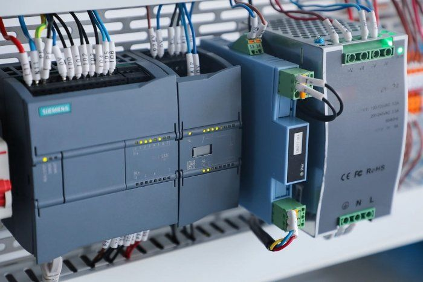
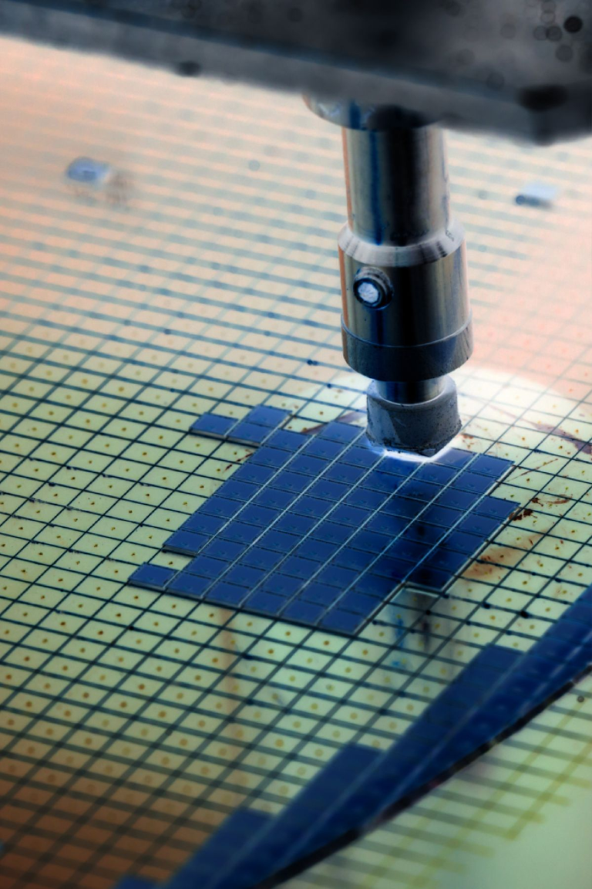
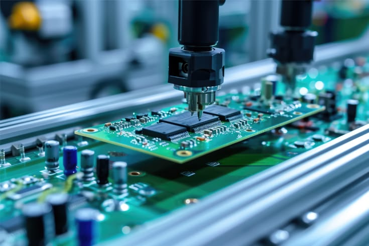
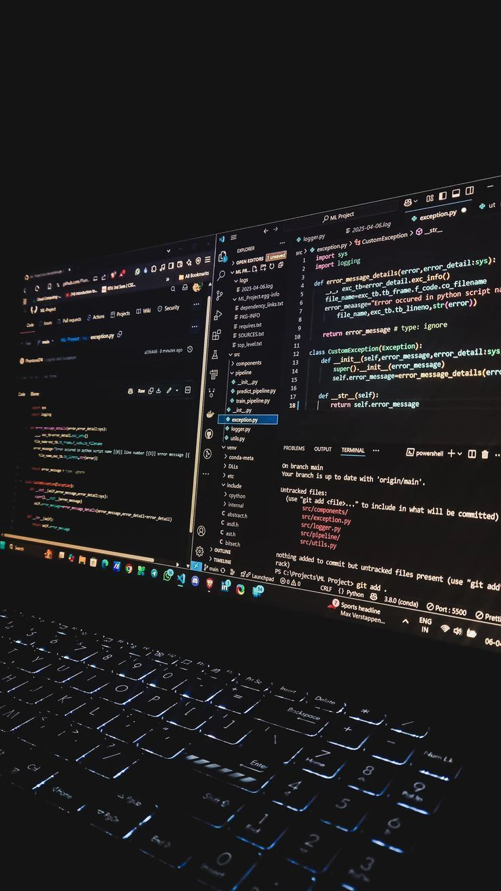
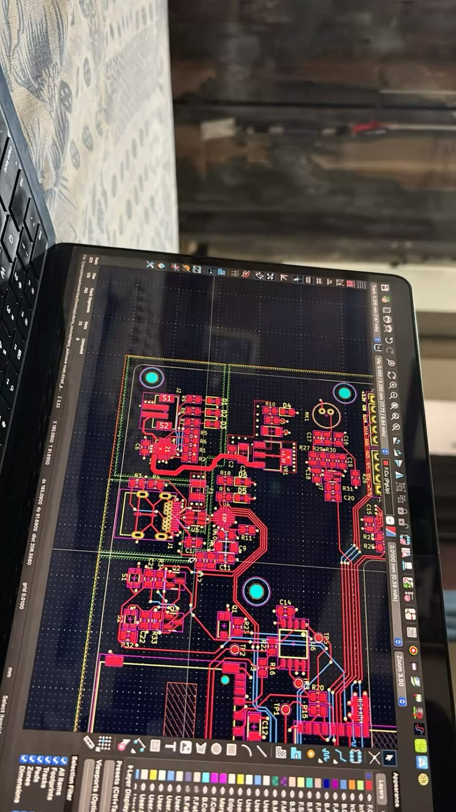
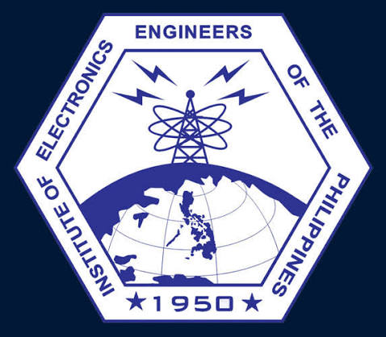
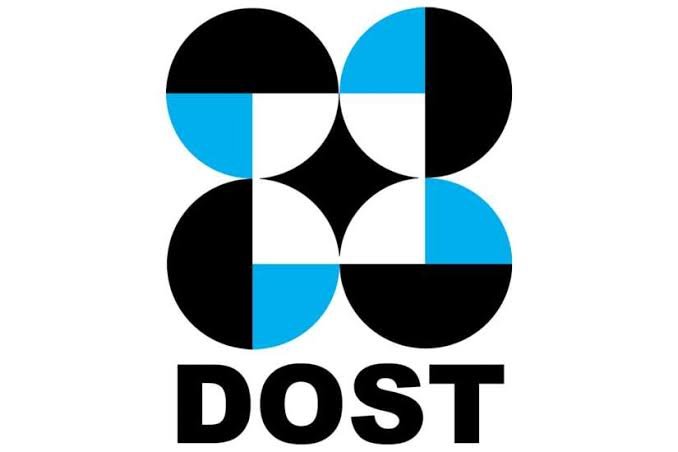

Explore by role
Related project focus:
Electronics Engineering · ECE
Electronics Engineer / Electronics Technician
Home / Quick profile
Choose a target role to prioritize relevant projects and engineering focus. Keep every detail grounded in your actual experience.
Explore by role
Related project focus:
Technical highlights
Add the specific instruments, controllers, microcontrollers, and software you have personally used. Do not list a model or tool until you can confirm it.
Featured projects
Select a project to open its case study.
About me
Electronics Engineer / Electronics Technician
I am an Electronics Engineering graduate interested in instrumentation and control, electronics, semiconductor technology, industrial automation, and engineering design. I enjoy turning practical problems into measurable systems through prototyping, testing, troubleshooting, and clear technical documentation. My academic background and hands-on training have helped me develop a foundation in technical analysis, problem-solving, and engineering workflows. I am eager to apply my knowledge in real-world settings, learn from experienced professionals, and continue developing my skills in designing, evaluating, and improving engineering systems. I value accuracy, continuous learning, teamwork, and a practical approach to solving technical challenges.
Want to know more about my experience? Download my résumé
Currently
01 / My capabilities
I combine electronics, problem-solving, and software skills to build prototypes, test systems, and document practical engineering work.
Developing and prototyping sensor-based systems, embedded projects, and control concepts through hands-on engineering work.
Supporting reliable project work with component testing, electrical measurements, troubleshooting, and clear technical documentation.
02 / Capabilities
A growing toolkit shaped by academic projects, laboratory exposure, and hands-on exploration.

Measurement concepts, feedback systems, PID control, sensors, and process monitoring.

Semiconductor fundamentals, ICs, datasheet analysis, component testing, and electrical measurements.

Microcontroller-based systems, connected devices, automation concepts, and prototyping.

Programming and software tools used across coursework, projects, analysis, and web development.

Technical communication, system diagrams, research documentation, and engineering design thinking.
03 / Selected work
A selection of engineering and research projects spanning control systems, robotics, IoT, applied AI, and web development.
ECE disciplines
Explore project themes across instrumentation, manufacturing, embedded systems, and applied research.
PID control, temperature monitoring, sensors, calibration, process monitoring, control diagrams, and measured system response.
Laboratory measurements, product evaluation, troubleshooting, reliability testing, test documentation, and ESD practices where supported by relevant training.
Microcontrollers, sensor interfacing, communication protocols, firmware, system architecture, and device demonstrations.
Semiconductor manufacturing, electronics testing, process monitoring, quality assurance, reliability testing, and technical documentation.
04 / Experience
Laboratory Internship · Editable date
Laboratory internship supporting testing and evaluation activities. Exposure included measurements, data collection, product evaluation, reliability tests, and technical documentation.
Update this entry with verified dates, department, tools, and specific contributions.
Education · Editable date
University / Institution Name · Location
Replace with your school, dates, honors, and relevant coursework.
Technical profile
A professional profile for presenting verified engineering work, technical projects, certifications, and hands-on experience.
Add license details or employment information only when confirmed.
05 / Credentials
ACHIEVEMENT · MAR 2026
Issued by Technical Education and Skills Development Authority (TESDA)
Awarded 2nd Place in Artificial Intelligence at the 2026 WorldSkills Philippines – Rizal competition, held March 17–19, 2026, at the University of Rizal System – Morong, Rizal. Recognized for technical competency, analytical thinking, and problem-solving.RESEARCH AWARD · APR 2026
Issued by University of Rizal System – Morong Campus
Recognized for outstanding achievement in developmental research through a thesis project focused on research, system development, and engineering problem-solving. The project applied engineering principles to address a practical problem through cacao fermentation monitoring and quality enhancement using convolutional neural networks (CNNs).
PROFESSIONAL AFFILIATION · NOV 2025 – JUN 2026
Member
Professional organization dedicated to advancing electronics engineering in the Philippines. Membership dates shown as provided: November 2025–June 2026.
DOST SCHOLARSHIP · OCT 2024 – JUN 2026
DOST Scholar — Merit
Scholarship supporting academic development in Electronics Engineering, with professional interests in control systems, semiconductor, and instrumentation.06 / Contact
For project collaboration, technical opportunities, or professional connections, I’d be glad to hear from you.
Start a conversation
jerome.parpa@example.com ↗